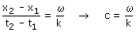

Velocidad de propagación
El valor de la fase espacio-temporal en un punto y en un instante se reproduce después en otro punto. La separación entre los puntos y el tiempo transcurrido permite saber la velocidad de propagación (c)
Considera una onda de fase: ωt - kx
Calculamos la fase espacio-temporal en (x1, t1) y (x2, t2)

Igualando las fases:

